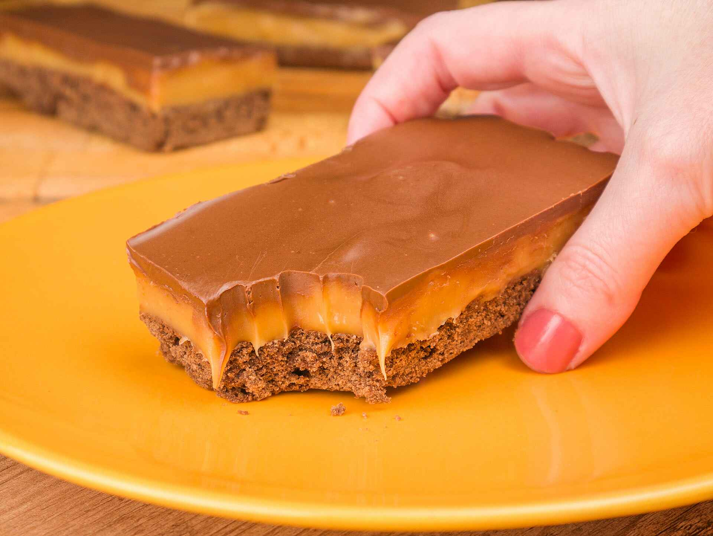

Torta de manteiga escocesa

Torta de manteiga escocesa
Ingredientes
- 600 g de farinha de trigo
- 200 g de manteiga
- 1 ovo
- 100 g de açúcar mascavo
- 100 g de açúcar
- 4 colheres (sopa) de cacau em pó
- 1 colher (chá) de extrato de baunilha
- 100 g de açúcar
- 80 g de manteiga
- 1 e 1/2 caixa de creme de leite
- 200 g de chocolate derretido
Modo de Preparo
- Em um recipiente, misture bem todos os 7 primeiros ingredientes
- Você vai ver, que irá se formar uma massa consistente, quase como um brigadeiro para enrolar
- Coloque a massa em uma forma quadrada untada ou com papel-manteiga no fundo
- Forre muito bem, faça furinhos com um garfo por toda a extensão e leve à geladeira por 15 minutos
- Coloque o mousse na geladeira, deixando em refrigeração por aproximadamente 4 horas
- Depois leve para assar por 30 minutos a 180° C
- Caramelo: Comece derretendo bem o açúcar em uma panela
- Quando o açúcar estiver completamente derretido, diminua bem o fogo e adicione a manteiga e o creme de leite, sem parar de mexer
- Misture tudo muito bem e espere a mistura se homogeneizar completamente e os cristais de açúcar derreterem bem
- Quando a mistura estiver bem cremosa, adicione o leite condensado e deixe no fogo até o ponto de brigadeiro
- Retire a massa do forno, espere esfriar um pouco e logo que retirar o caramelo da panela, despeje por toda à massa
- Deixe esfriar ou leve para à geladeira por alguns minutinhos
- Cobertura: Derreta o chocolate a seu gosto
- Despeje o chocolate por cima da sua barrinha de torta de manteiga
- Espere esfriar e o chocolate endurecer
- Sirva cortando em pequenos retângulos
Informações Nutricionais
| Nutrientes |
Porção (60mg) |
%VD |
| Valor Calórico (kal) |
22,37 |
9,01 |
| Carboidratos (g) |
40,56 |
10,82 |
| Proteina(g) |
5,27 |
8,53 |
| Gorduras totais (g) |
4,36 |
5,45 |
| Gorduras Saturadas (g) |
2,71 |
10,83 |
| Colesterol (g) |
16,68 |
5,56 |
| Fibras Alimentares |
0,30 |
0,99 |
| Cálcio |
142,21 |
17,78 |
| Ferro (mg) |
0,26 |
1,89 |
| Sódio (mg) |
91,62 |
3,82 |